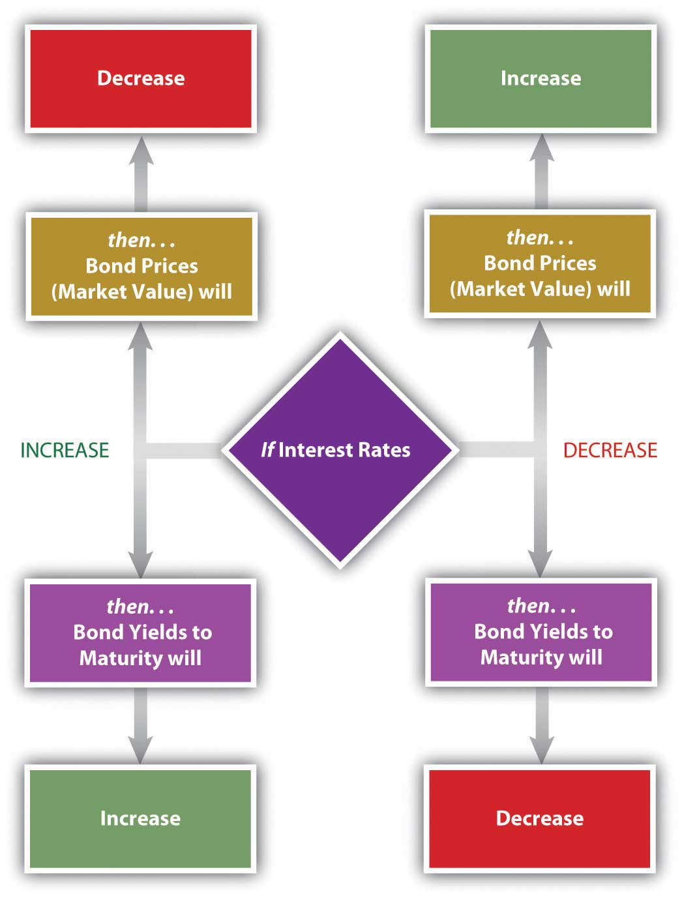
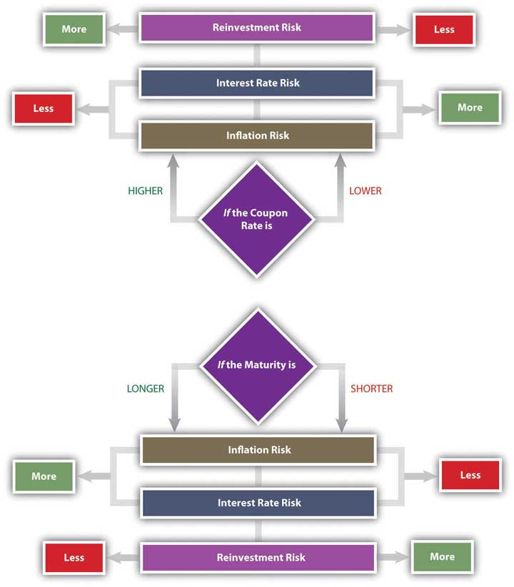
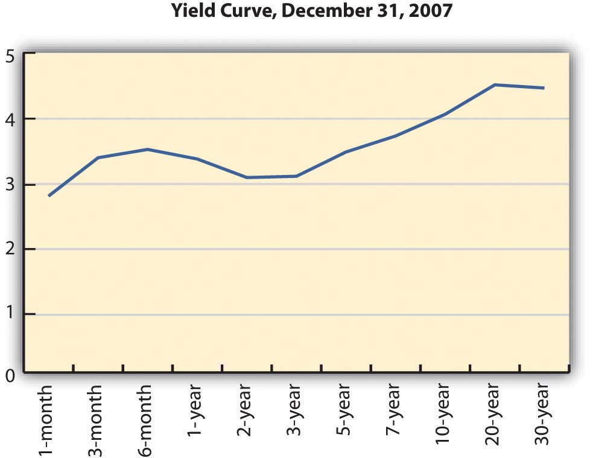
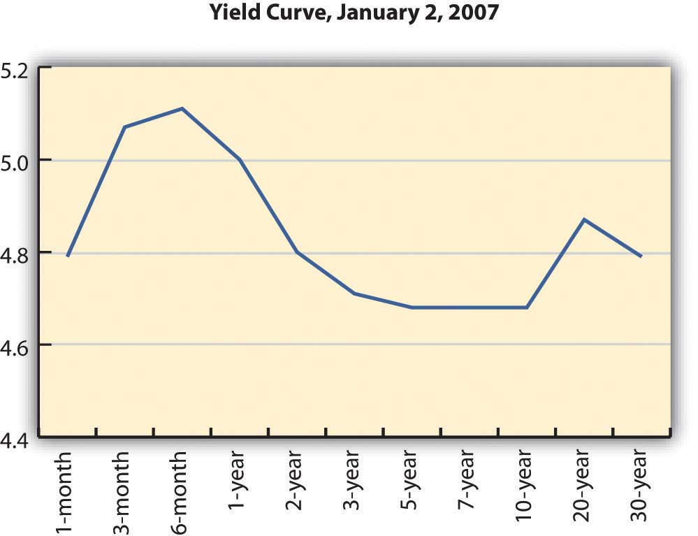

Bond-rating systems do not replace bond analysis, which focuses on bond value. Like any investment, a bond is worth the value of its expected return. That value depends on the amount expected and the certainty of that expectation. To understand bond values, then, is to understand the value of its return and the costs of its risks.
Bonds return two cash flows to their investors: (1) the coupon, or the interest paid at regular intervals, usually twice yearly or yearly, and (2) the repayment of the principal at maturity. The amounts are spelled out in the bond itself. The coupon rate is specified (for a fixed-rate bond) and the face value is the principal to be returned at the stated maturity.
Unlike a stock, for which the cash flows—both the amount and the timing—are “to be determined,” in a bond everything about the cash flows is established at the outset. Any bond feature that makes those cash flows less certain increases the risk to the investor and thus the investor’s return. If the bond has a floating-rate coupon, for example, then there is uncertainty about the amount of the coupon payments. If the bond is callable, there is uncertainty about the number of coupon payments.
Whatever the particular features of a bond, as debt instruments, bonds expose investors to specific risks. What are those risks, and what is their role is defining expectations of returns?
Unlike a stock, a bond’s future cash returns are known with certainty. You know what the coupon will be (for a fixed-rate bond) and you know that at maturity the bond will return its face value. For example, if a bond pays a 4 percent coupon and matures in 2020, you know that every year your will receive $20 twice per year (20 = 4% × 1,000 × ½) until 2020 when you will also receive the $1,000 face value at maturity. You know what you will get and when you will get it. However, you can’t be sure what that will be worth to you when you do. You don’t know what your opportunity cost will be at the time.
Investment returns are quoted as an annual percentage of the amount invested, the rate of return. For a bond, that rate is the yield. Yield is expressed in two ways: the current yield and the yield to maturity. The current yieldThe short-term return on a bond, calculated as the coupon as a percentage of the bond price. is a measure of your bond’s rate of return in the short term, if you buy the bond today and keep it for one year. You can calculate the current yield by looking at the coupon for the year as a percentage of your investment or the current price, which is the market price of the bond.
current yield = annual coupon (interest received, or cash flows) ÷ market value = (coupon rate × face value) ÷ market value.So, if you bought a 4 percent coupon bond, which is selling for $960 today (its market value), and kept it for one year, the current yield would be 40 (annual coupon) ÷ 960 (market value) = 4.1667%. The idea of the current yield is to give you a quick look at your immediate returns (your return for the next year).
In contrast, the yield to maturityThe total return on a bond, assuming it is held to maturity and that coupons may be reinvested at the same rate. (YTM) is a measure of your return if you bought the bond and held it until maturity, waiting to claim the face value. That calculation is a bit more complicated, because it involves the relationship between time and value (Chapter 4 "Evaluating Choices: Time, Risk, and Value"), since the yield is over the long term until the bond matures. You will find bond yield-to-maturity calculators online, and many financial calculators have the formulas preprogrammed.
To continue the example, if you buy a bond for $960 today (2010), you will get $20 every six months until 2020, when you will also get $1,000. Because you are buying the bond for less than its face value, your return will include all the coupon payments ($400 over 10 years) plus a gain of $40 (1,000 − 960 = 40). Over the time until maturity, the bond returns coupons plus a gain. Its yield to maturity is close to 4.5 percent.
Bond prices, their market values, have an inverse relationship to the yield to maturity. As the price goes down, the yield goes up, and as the price goes up, the yield goes down. This makes sense because the payout at maturity is fixed as the face value of the bond ($1,000). Thus, the only way a bond can have a higher rate of return is to have a lower price in the first place.
The yield to maturity is directly related to interest rates in general, so as interest rates increase, bond yields increase, and bond prices fall. As interest rates fall, bond yields fall, and bond prices increase. Figure 16.4 "Bond Prices, Bond Yields, and Interest Rates" shows these relationships.
Figure 16.4 Bond Prices, Bond Yields, and Interest Rates
You can use the yield to maturity to compare bonds to see how good they are at creating returns. This yield holds if you hold the bond until maturity, but you may sell the bond at any time. When you sell the bond before maturity, you may have a gain or a loss, since the market value of the bond may have increased or decreased since you bought it. That gain or loss would be part of your return along with the coupons you have received over the holding period, the period of time that you held the bond.
Your holding period yieldThe annualized return on a bond over the period it is owned. is the annualized rate of return that you receive depending on how long you have held the bond, its gain or loss in market value, and the coupons you received in that period. For example, if you bought the bond for $960 and sold it again for $980 after two years, your return in dollars would be the coupons of $80 ($40 per year × 2 years) plus your gain of $20 ($980 − 960), relative to your original investment of $960. Your holding period yield would be close to 5.2 percent.
The basic risk of bond investing is that the returns—the coupon and the principal repayment (face value)—will not be repaid, or that when they are repaid, they won’t be worth as much as you thought they would be. The risk that the company will be unable to make its payments is default risk—the risk that it will default on the bond. You can estimate default risk by looking at the bond rating as well as the economic, sector, and firm-specific factors that define the company’s soundness.
Part of a bond’s value is that you can expect regular coupon payments in cash. You could spend the money or reinvest it. There is a risk, however, that when you go to reinvest the coupon, you will not find another investment opportunity that will pay as high a return because interest rates and yields have fallen. This is called reinvestment riskThe risk that a change in interest rates during the bond’s term will change the earnings from reinvesting bond coupons.. Your coupons are the amount you thought they would be, but they are not worth as much as you expected, because you cannot earn as much from them.
If interest rates and bond yields have dropped, your fixed-rate bond, which is still paying the now-higher-than-other-bonds coupon, has become more valuable. Its market price has risen. But the only way to realize the gain from the higher price is to sell the bond, and then you won’t have any place to invest the proceeds in other bonds to earn as much return.
Reinvestment risk is one facet of interest rate risk, which arises from the fundamental relationship between bond values and interest rates. Interest rate riskThe risk that a bond’s market value will be affected by a change in interest rates. is the risk that a change in prevailing interest rates will change bond value—that interest rates will rise and the market value of the bond will fall. (If interest rates fell, the bond value would increase, which the investor would not see as a risk.)
Another threat to the value of your coupons and principal repayment is inflation. Inflation riskThe risk that the value of a bond’s returns will be decreased by a decrease in value of the currency of the bond’s denomination. is the risk that your coupons and principal repayment will not be worth as much as you thought, because inflation has decreased the purchasing power or the value of the dollars you receive.
A bond’s features can make it more or less vulnerable to these risks. In general, the longer the term to maturity is, the riskier the bond is. The longer the term is, the greater the probability that the bond will be affected by a change in interest rates, a period of inflation, or a damaging business cycle.
In general, the lower the coupon rate and the smaller the coupon, the more sensitive the bond will be to a change in interest rates. The lower the coupon rate and the smaller the coupon, the more of the bond’s return comes from the repayment of principal, which only happens at maturity. More of your return is deferred until maturity, which also makes it more sensitive to interest rate risk. A bond with a larger coupon provides more liquidity, over the term of the bond, and less exposure to risk. Figure 16.5 "Bond Characteristics and Risks" shows the relationship between bond characteristics and risks.
Figure 16.5 Bond Characteristics and Risks
A zero-coupon bond offers the lowest coupon rate possible: zero. Investors avoid reinvestment risk since the only return—and reinvestment opportunity—comes when the principal is returned at maturity. However, a “zero” is exposed to the maximum interest rate risk, because interest rates will always be higher than its coupon rate of zero. The attraction of a zero is that it can be bought for a very low price.
As a bond investor, you can make better decisions if you understand how the characteristics of bonds affect their risks and yields as you use those yields to compare and choose bonds.
Interest rates affect bond risks and bond returns. If you plan to hold a bond until maturity, interest rates also affect reinvestment risk. If you plan to sell the bond before maturity, you face interest rate risk or the risk of a loss of market value. When you invest in bonds, then, you want to be able to forecast future interest rates.
Investors can get a sense of how interest rates are expected to change in the future by studying the yield curve. The yield curveA graphic depiction of the term structure of interest rates. is a graph of U.S. Treasury securities compared in terms of the yields for bonds of different maturities. U.S. Treasury securities are used because the U.S. government is considered to have no default risk, so that the yields on its bills and bonds reflect only interest rate, reinvestment, and inflation risks—all of which are reflected in expected, future interest rates.
The yield curve illustrates the term structure of interest ratesA comparison of interest rates for bonds of different maturities., or the relationship of interest rates to time. Usually, the yield curve is upward sloping—that is, long-term rates are higher than short-term rates. Long-term rates indicate expected future rates. If the economy is expanding, future interest rates are expected to be higher than current interest rates, because capital is expected to be more productive in the future. Future interest rates will also be higher if there is inflation because lenders will want more interest to make up for the fact that the currency has lost some of its purchasing power. Figure 16.6 "Upward-Sloping Yield Curve" shows an upward-sloping yield curve.
Figure 16.6 Upward-Sloping Yield CurveU.S. Department of the Treasury, “Daily Treasury Yield Curve Rates,” http://www.treasury.gov/resource-center/data-chart-center/interest-rates/Pages/TextView.aspx?data=yieldYear&year=2007 (accessed May 23, 2012).
Depending on economic forecasts, the yield curve can also be flat, as in Figure 16.7 "Flat Yield Curve", or downward sloping, as in Figure 16.8 "Downward-Sloping Yield Curve".
Figure 16.7 Flat Yield CurveU.S. Department of the Treasury, “Daily Treasury Yield Curve Rates,” http://www.treasury.gov/resource-center/data-chart-center/interest-rates/Pages/TextView.aspx?data=yieldYear&year=2007 (accessed May 23, 2012).
Figure 16.8 Downward-Sloping Yield CurveU.S. Department of the Treasury, “Daily Treasury Yield Curve Rates,” http://www.treasury.gov/resource-center/data-chart-center/interest-rates/Pages/TextView.aspx?data=yieldYear&year=2007 (accessed May 23, 2012).

A flat yield curve indicates that future interest rates are expected to be about the same as current interest rates or that capital will be about as productive in the economy as it is now. A downward-sloping yield curve shows that future interest rates are expected to be lower than current rates. This is often interpreted as a signal of a recession, because capital would be less productive in the future if the economy were less productive then.
The yield curve is not perfectly smooth; it changes every day as bonds trade and new prices and new yields are established in the bond markets. It is a widely used indicator of interest rate trends, however. It can be useful to you to know the broad trends in interest rates that the market sees.
For your bond investments, an upward-sloping yield curve indicates that interest rates will go up, which means that bond yields will go up but bond prices will go down. If you are planning to sell your bond in that period of rising interest rates, you may be selling your bond at a loss.
Because of their known coupon and face value, many investors use bonds to invest funds for a specific purpose. For example, suppose you have a child who is eight years old and you want her to be able to go to college in ten years. You might invest in bonds that have ten years until maturity. However, if you invest in bonds that have twenty years until maturity, they will have a higher yield (all else being equal), so you could invest less now.
You could buy the twenty-year bonds but plan to sell them before maturity for a price determined by what interest rates are in ten years (when you sell them). If the yield curve indicates that interest rates will rise over the next ten years, then you could expect your bond price to fall, and you would have a loss when you sell the bond, which would take away from your returns.
In general, rising interest rates mean losses for bondholders who sell before maturity, and falling interest rates mean gains for bondholders who sell before maturity. Unless you are planning to hold bonds until maturity, the yield curve can give you a sense of whether you are more likely to have a gain or loss.
All bonds expose investors to
Bond returns can be measured by yields.
The yield curve may be